Kasia & Marcin
Pobieramy się!
KATARZYNA DYJACH & MARCIN GAWROŃSKI
z radością informują o zbliżającym się ślubie oraz weselu i proszą o zarezerwowanie daty:
PIĄTEK
12.06.2026
Harmonogram
Plan dnia — 12 czerwca 2026
Możliwość zameldowania się w Avion Hotel w Świdniku i odłożenia bagaży przed mszą.
Prosimy o przybycie kilka minut przed mszą, aby spokojnie zająć miejsca.
Parafia św. Józefa i św. Antoniego w Kawęczynie.
Kawęczyn 7, 21-050 Kawęczyn.
Po zakończeniu ceremonii goście udają się własnym transportem do Wierzchowiska Golf & Country Club.
Życzenia ślubne w ogrodzie sali weselnej, powitalny szampan i przywitanie gości.
Zasiadamy do stołu — czas na toasty, życzenia i wspólne świętowanie.
Pierwszy taniec pary młodej i rozpoczęcie zabawy weselnej.
Czas na słodki akcent wieczoru — wspólne krojenie tortu.
Zabawy oczepinowe.
Rozpoczyna się kursowanie busa z sali weselnej do Hotelu Avion — szczegóły w sekcji Transport.
Zakończenie zabawy na sali weselnej, oraz ostatnie busy rozwożące gości do hotelu
Dla gości nocujących w hotelu zapewnione jest śniadanie. Po śniadaniu, około godz. 12:00 z hotelu będzie podstawiony bus, który zawiezie gości na sale po odbiór samochodów.
Harmonogram jest orientacyjny i może ulec zmianie — szczegółowy plan zostanie podany bliżej daty ślubu. Warto śledzić zmiany na stronie :)
Ceremonia
Msza Święta — godz. 16:00
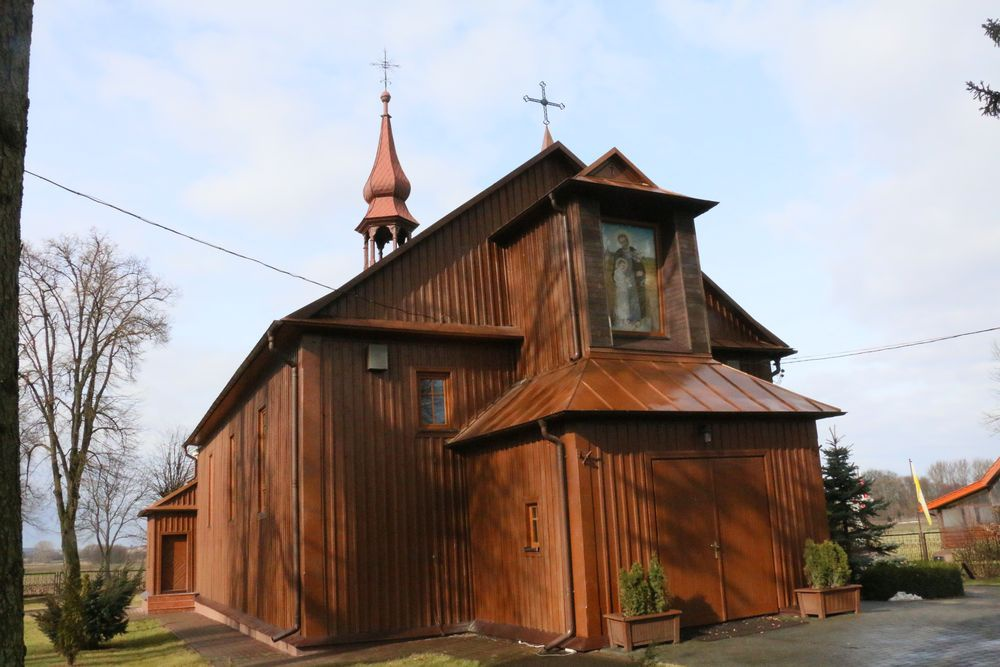
Kościół
Kawęczyn
Mszę świętą sprawowaną z okazji naszego ślubu będziemy mieli przyjemność przeżyć w Parafii św. Józefa i św. Antoniego w Kawęczynie. Prosimy o przybycie kilka minut wcześniej, by spokojnie zająć miejsca.
Wesele
Wierzchowiska Golf & Country Club
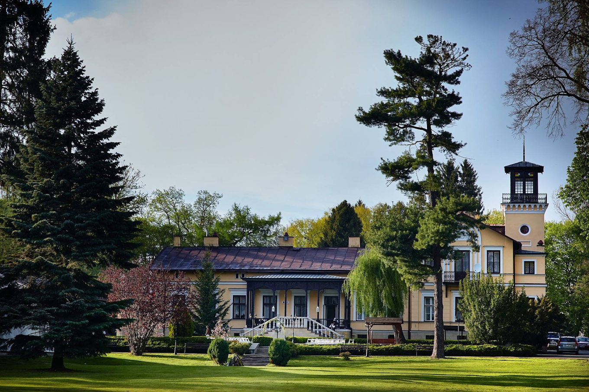
Miejsce przyjęcia
Wierzchowiska
Przyjęcie weselne odbędzie się w urokliwym Wierzchowiska Golf & Country Club — pięknym kompleksie otoczonym zielenią pól golfowych w sercu Lubelszczyzny. Elegancka sala, taras i pola golfowe stworzą niezapomnianą oprawę naszego wspólnego świętowania.
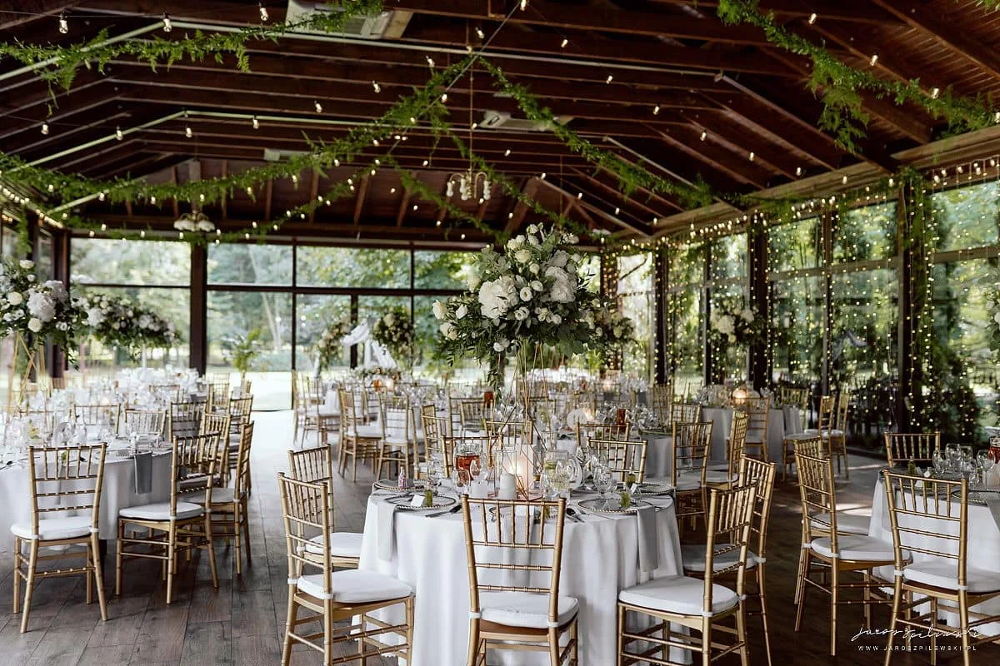
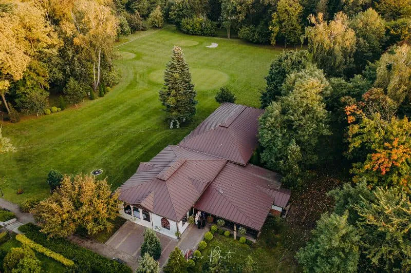
Nocleg
Avion Hotel — Świdnik
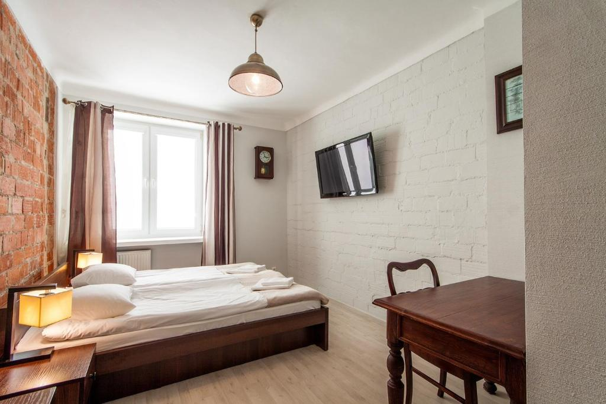
Hotel
Avion Hotel
Dla gości, którzy zdecydowali się na nocleg, zarezerwowaliśmy pokoje w Avion Hotel w Świdniku. Zameldowanie możliwe już od godz. 14:00 — można zostawić bagaż przed wyjazdem na mszę. Dla wszystkich gości śpiących w hotelu z rana będzie czekać komplementarne śniadanie.
Uwaga dla gości bez noclegu: Jeżeli zrezygnowałeś/aś z noclegu, pamiętaj o zaplanowaniu powrotu we własnym zakresie. Bus z sali do hotelu jest przeznaczony dla gości nocujących.
Transport
Jak dotrzeć i jak wrócić
Dojazd na mszę i wesele
Przyjazd do kościoła w Kawęczynie oraz na salę w Wierzchowiskach we własnym zakresie. Oba miejsca posiadają parking dla gości.
Bus z wesela do hotelu
Z sali weselnej będzie kursował bus do Avion Hotel w Świdniku. Pierwszy kurs o godz. 00:00, następnie co ok. godzinę aż do końca wesela. Bus jest przeznaczony dla gości nocujących.
Powrót po śniadaniu
Następnego dnia, po śniadaniu w hotelu, planowany jest bus z powrotem na salę — umożliwi to odebranie samochodów pozostawionych na parkingu w Wierzchowiskach.
Harmonogram busa będzie płynny w zależności zapotrzebowania podczas wesela. O szczegóły busa podczas wesela prosimy pytać świadka Andrzeja :)
Lublin
Dla gości przyjeżdżających z daleka
Lublin to jedno z najpiękniejszych miast historycznych w Polsce — skarb kultury, architektury i kulinarnych doświadczeń. Jeśli przyjechałeś/aś z daleka, koniecznie poświęć chwilę na zwiedzanie!
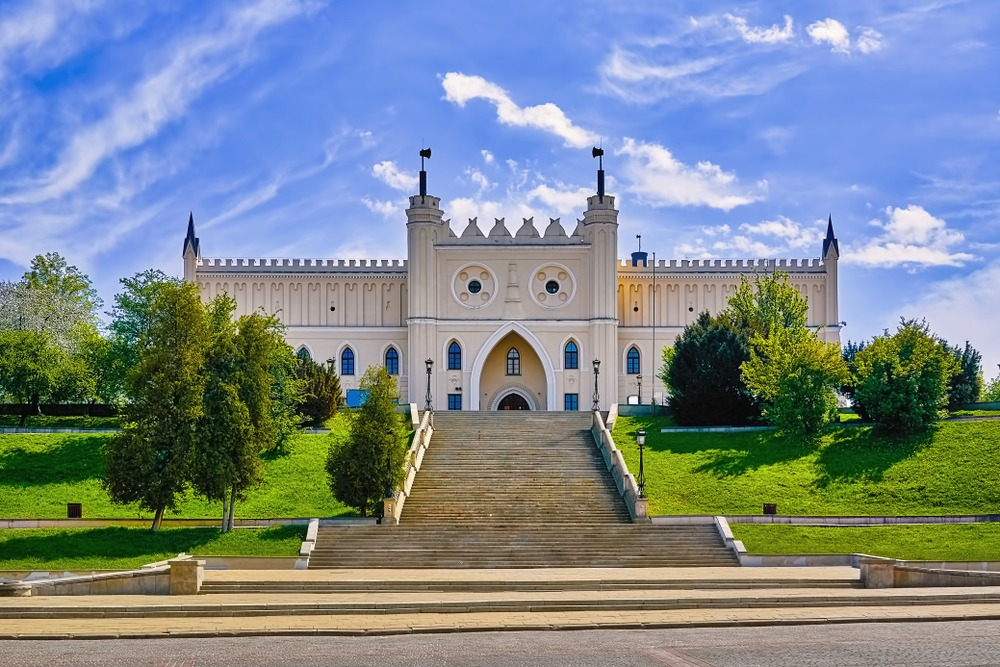
Zamek Lubelski
Gotycki zamek z XIV w., dziś muzeum z bogatą kolekcją malarstwa i ekspozycją historyczną. Wieża widokowa oferuje panoramę całego miasta.
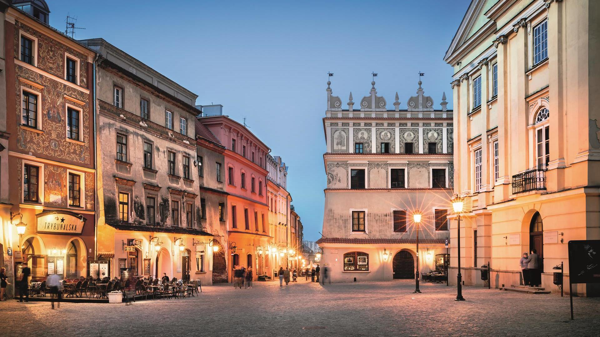
Stare Miasto
Zabytkowe centrum z kolorowymi kamienicami, wąskimi uliczkami i Rynkiem Starego Miasta. Idealne na spacer i odkrywanie kawiarni.
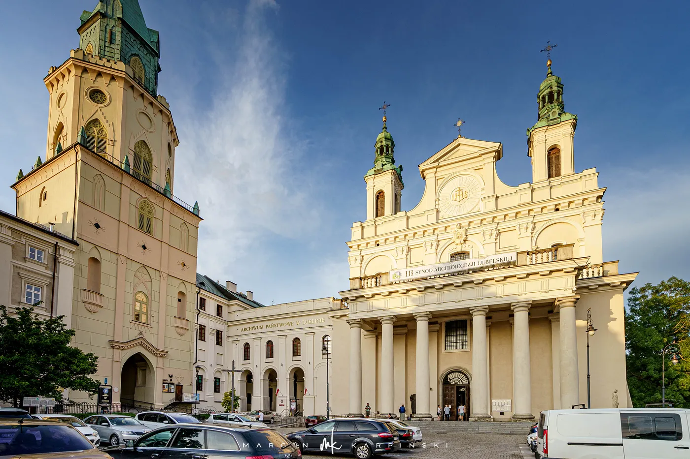
Katedra Lubelska
Barokowa katedra z XVII w. z imponującymi freskami i kryptą skarbców. Jedna z najpiękniejszych świątyń w Polsce.
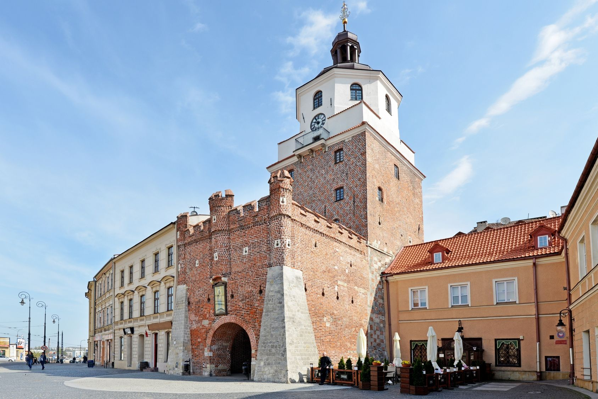
Brama Krakowska
XIV-wieczna brama miejska — symbol Lublina i punkt startowy spacerów po Starym Mieście. Z wieży piękny widok na Krakowskie Przedmieście.
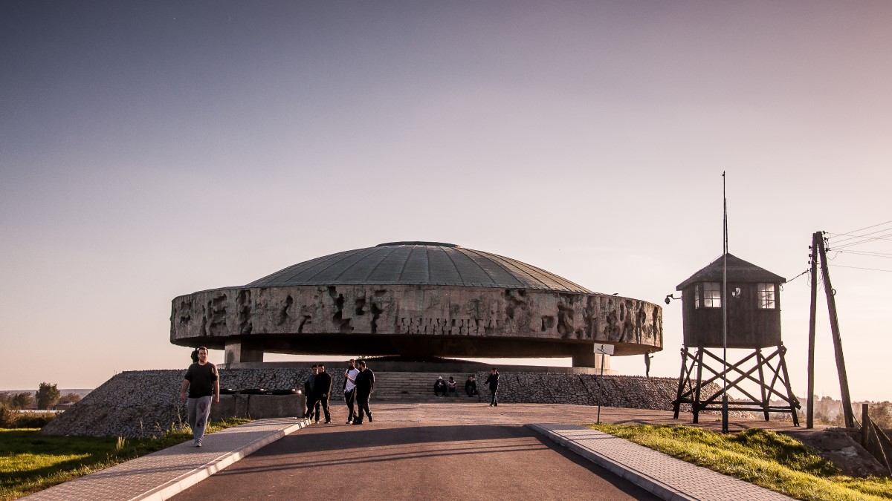
Państwowe Muzeum na Majdanku
Były obóz koncentracyjny — ważne miejsce pamięci i historycznej refleksji, wpisane do rejestru dziedzictwa UNESCO.
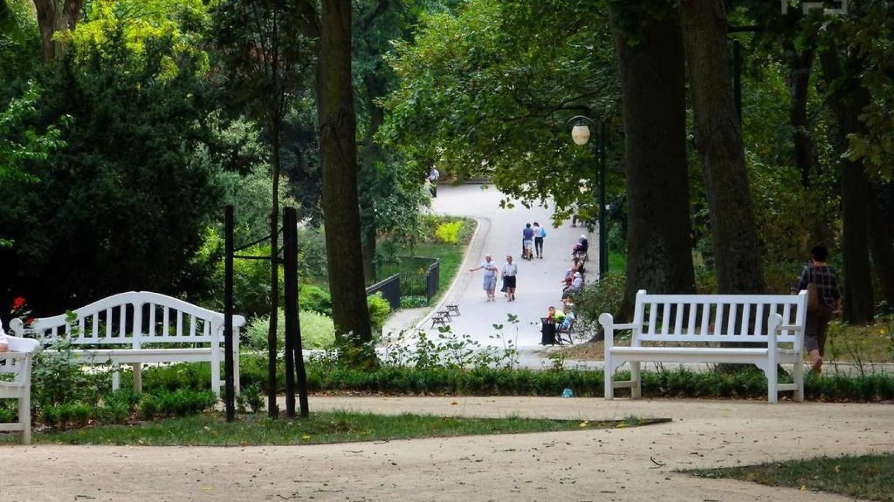
Ogród Saski
Piękny park w centrum miasta — idealny na poranną kawę lub relaks po nocnej zabawie. Wyjątkowo malowniczy w czerwcu.
Dojazd do Lublina: Świdnik (gdzie mieści się hotel) leży ok. 10 km od centrum Lublina. Taksówka lub Bolt zajmie ok. 15–20 minut.